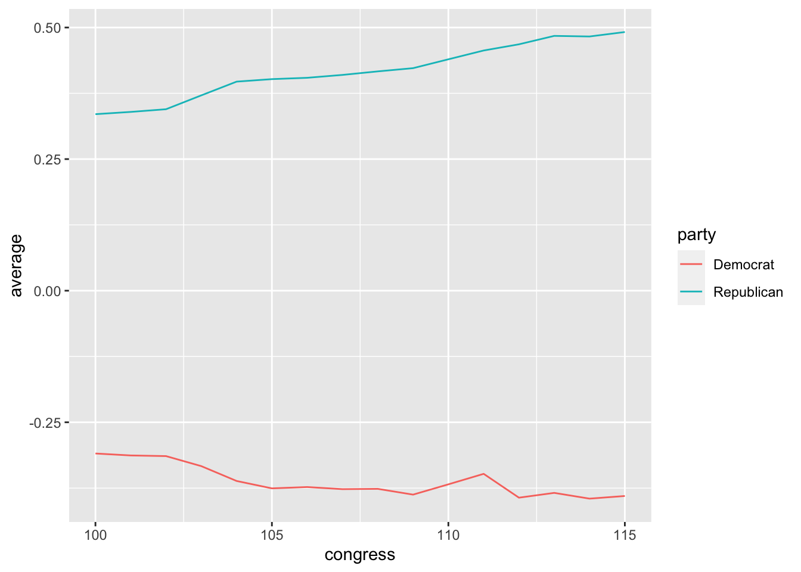
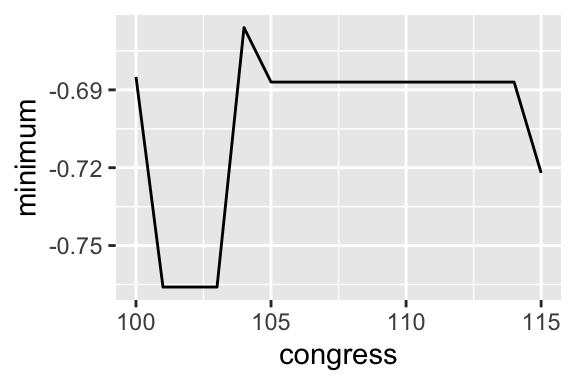
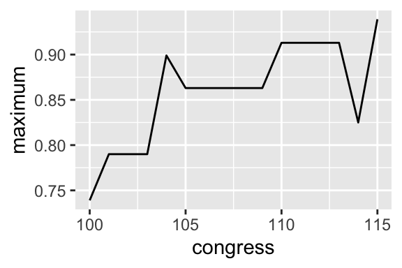

Chapter 6 Average and SD in R
In the last chapter, we learned how to discribe the location and spread of a variable using the average and SD. I suggested that we can describe a large collection of numbers as: “…about ________, give or take ________ or so.” (The average belongs in the first blank; the SD belongs in the second.)
We also learned how to compute the average and SD with paper-and-pencil to help us understand how these summaries work.
In this chapter, I show how to compute the average, SD, and related summaries.
6.1 mean() and sd()
If we have a vector of data, we can easily calculate the average and SD in R using the mean() and sd() functions in R. (Note that the sd() function uses a slightly different formula, but the difference usually isn’t important in practice.)
# create variable x = {1, 2, 3, 4, 5}
x <- c(1, 2, 3, 4, 5)
# compute two-number summary
mean(x) # average## [1] 3## [1] 1.581139na.rm = TRUE to each function (the default is na.rm = FALSE). How does this argument alter the calculations? Does the default beahvior make sense?
6.1.1 A Note About R’s sd() Function
For reasons I don’t want to deal with now, R uses the formula \(SD = \sqrt{\dfrac{(x_i - \text{avg}(X))^2}{n - 1}}\) rather than \(\sqrt{\dfrac{(x_i - \text{avg}(X))^2}{n}}\). At the “M” stage of RMS, the sd() function divides by one less than the number of observations (or \(n - 1\)) rather than just the number of observations (\(n\)). In fairness to the software developers, the “one less” approach is more common, but is connected to ideas we’ll learn later in the class. For now, just realize that there are two ways to compute the SD and that R’s SD will be slightly larger than the SD with my formula. Importantly, the difference will be tiny in datasets with a typical number of observations.
# illustrating the difference in R's sd() formula
# R's method (see above)
# our method
deviations <- x - mean(x) # compute the deviations from the average
s <- deviations^2 # square: the "s" in RMS of deviations
m <- mean(s) # mean: the "m" in RMS of deviations
r <- sqrt(m) # root: the "r" in RMS of deviations
print(r) # RMS of deviations = SD## [1] 1.414214For this small dataset, R’s method (divide by \(n - 1\) at the M-step) gives an answer of 1.58. Our method (divide by \(n\) at the m-step, the way we usually would for an average) gives an answer of 1.41.
6.2 Other Summaries
We can also use other obviously-named functions to compute the other summaries from the previous chapter. The only tricky part is that you must supply the percentiles you want as a proportion to the prob argument for the quantile() function.
## [1] 1## 25%
## 2## [1] 3## 75%
## 4## [1] 5## [1] 1 2 3 4 5## Min. 1st Qu. Median Mean 3rd Qu. Max.
## 1 2 3 3 4 5## [1] 2fivenum() and summary() functions. Compute the interquartile range.
na.rm = FALSE (the default) and na.rm = TRUE. How does this argument alter the calculations? Does the default beahvior make sense? Now try the fivenum() and summary() function without supplying na.rm = TRUE. Does the default behavior differ?
6.3 Data Frame Nuance
We can compute on variables in data frames using the data$variable syntax we learned earlier in the semester. If the vector (or “variable” or “collection of numbers”) that we want to use is contained in a data frame, then we need to remember to use the data$variable syntax to give R permission to use that variable.
# load packages
library(tidyverse)
# load nominate data
nominate_df <- read_rds("data/nominate.rds")
# compute summaries on variable "ideology" in the data frame "nominate_df"
## compute two-number summary, without removing NA values
mean(nominate_df$ideology) # average## [1] NA## [1] NAWe run into an issue with the NA values. Because the ideology score is missing for one representative who never cast a vote, we cannot compute the average, which requires us to sum all the observations. If we don’t know all the values, then we don’t know the sum.
As a quick fix, we can just ignore the missing values. We can tell R to remove the NA values before computing each statistic using the na.rm = TRUE argument.
## compute two-number summary, without removing NA values
mean(nominate_df$ideology, na.rm = TRUE) # average## [1] 0.02323167## [1] 0.4183598## [1] -0.766## 25%
## -0.378## [1] -0.038## 75%
## 0.405## [1] 0.939## [1] -0.766 -0.378 -0.038 0.405 0.939## alternatively, but with average included
summary(nominate_df$ideology) # this function also drops NA values by default## Min. 1st Qu. Median Mean 3rd Qu. Max. NA's
## -0.76600 -0.37800 -0.03800 0.02323 0.40500 0.93900 1## [1] 0.783health.rds and compute the two-number and five-number summaries (all separately) for the variable percent_uninsured.
6.4 The group_by()/summarize() Workflow
The mean(), sd(), and other functions above work nicely for computing these summaries using all the values of a variable.
But in most cases, we are interested in comparing the the average (or another summary) across groups. We usually want to compute the averages for men and women, the average for each of the 50 U.S. states, or the average for each party in each congress, for example.
Let’s take a close look at the nominate dataset.
# load packages
library(tidyverse)
# load nominate data
nominate_df <- read_rds("data/nominate.rds")
# quick look
glimpse(nominate_df)## Rows: 7,080
## Columns: 7
## $ congress <int> 100, 100, 100, 100, 100, 100, 100, 100, 100, 100, 100, 100, …
## $ chamber <chr> "House", "House", "House", "House", "House", "House", "House…
## $ state <chr> "AL", "AL", "AL", "AL", "AL", "AL", "AL", "AK", "AZ", "AZ", …
## $ district <int> 2, 4, 3, 5, 6, 1, 7, 1, 2, 3, 5, 4, 1, 3, 1, 4, 2, 36, 10, 2…
## $ party <fct> Republican, Democrat, Democrat, Democrat, Democrat, Republic…
## $ name <chr> "DICKINSON, William Louis", "BEVILL, Tom", "NICHOLS, William…
## $ ideology <dbl> 0.398, -0.213, -0.042, -0.175, -0.060, 0.373, -0.085, 0.279,…For these data, we might want to know the average ideology for Republicans and Democrats. We could do it the hard way, using filter() to create separate datasets for Republicans and Democrats.
# create a data frame with only republicans
rep_df <- filter(nominate_df, party == "Republican")
# compute average
mean(rep_df$ideology, na.rm = TRUE)## [1] 0.4213385But this is tedious, especially if we wanted to do it by party and Congress. That would be two parties and 16 Congresses–32 separate datasets to create and compute the average with.
Much like faceting allows us to draw lots of plots for different subsets of the data, the group_by()/summarize() workflow allows us to do the same thing for averages (or other summaries).
As you might guess, the group_by()/summarize() workflow has two steps: a grouping step and a summarizing step.
6.4.1 group_by()
group_by() defines groups in the data frame. The first argument is the data frame to group. The remaining arguments are the grouping variables. You can think if the groups as a footnote at the bottom of the data set that just mentions the variables that define the groups of interest.
# group the data frame by party and congress
grouped_df <- group_by(nominate_df, party, congress)
# quick look at the grouped data frame; notice the groups
glimpse(grouped_df)## Rows: 7,080
## Columns: 7
## Groups: party, congress [32]
## $ congress <int> 100, 100, 100, 100, 100, 100, 100, 100, 100, 100, 100, 100, …
## $ chamber <chr> "House", "House", "House", "House", "House", "House", "House…
## $ state <chr> "AL", "AL", "AL", "AL", "AL", "AL", "AL", "AK", "AZ", "AZ", …
## $ district <int> 2, 4, 3, 5, 6, 1, 7, 1, 2, 3, 5, 4, 1, 3, 1, 4, 2, 36, 10, 2…
## $ party <fct> Republican, Democrat, Democrat, Democrat, Democrat, Republic…
## $ name <chr> "DICKINSON, William Louis", "BEVILL, Tom", "NICHOLS, William…
## $ ideology <dbl> 0.398, -0.213, -0.042, -0.175, -0.060, 0.373, -0.085, 0.279,…Notice that glimpse() shows us the groups that we defined: party, congress [32]. This means that this data set now has 32 groups, one for each party-Congress combination.
6.4.2 summarize()
After grouping, we use summarize() to create summaries for each group. Whenever we use summarize() on a grouped data frame, summarize() will compute quantities for each group. Since we created a group for each party-Congress, we can now use summarize to find the average for each, for example.
The first argument to summarize() is the grouped data frame to summarize. The remaining arguments are the summaries to compute. As examples, let’s compute the average, SD, and median.
# group the data frame by party and congress
grouped_df <- group_by(nominate_df, party, congress)
# summarize the grouped data frame (across the groups)
summarized_df <- summarize(grouped_df,
average = mean(ideology, na.rm = TRUE),
sd = sd(ideology, na.rm = TRUE),
median = median(ideology, na.rm = TRUE))## `summarise()` regrouping output by 'party' (override with `.groups` argument)## Rows: 32
## Columns: 5
## Groups: party [2]
## $ party <fct> Democrat, Democrat, Democrat, Democrat, Democrat, Democrat, …
## $ congress <int> 100, 101, 102, 103, 104, 105, 106, 107, 108, 109, 110, 111, …
## $ average <dbl> -0.3092901, -0.3130075, -0.3142407, -0.3333065, -0.3615000, …
## $ sd <dbl> 0.1653092, 0.1664293, 0.1658089, 0.1609726, 0.1524251, 0.137…
## $ median <dbl> -0.3200, -0.3200, -0.3200, -0.3360, -0.3815, -0.3835, -0.384…Notice three important things above.
summarize()returns a data frame with one row per group.- There are two types of variables in the new data frame.
- First, we have one variable for each grouping variable from the original data frame. Together, these identify each group.
- Second, the names of the second, third, …, arguments become variables in the resulting data frame. These variables contain the summaries for each group.
We now have a data frame with our desired summaries. For the first row in the dataset, we have the average, SD, and median for the Democrats in the 100th Congress. The party and congress variables identify the group. The average, sd, and median variables contain the summaries for that group.
filter() create a dataset that contains only observations from the 115th Congress. The use group_by() and summarize() to compute the average ideology for each state’s delegation. Select the Environment tab in the upper-right panel. Click on the data frame with the summaries. Explore the values. What state has the most conservative delegation? Most liberal?
group_by() and summarize() to compute the minimum and maximum ideology for each congress (regardless of party). Select the Environment tab in the upper-right panel. Click on the data frame with the summaries. Explore the values.
6.5 geom_line()
Because summarize() returns a data frame, we can easily work with it in ggplot. Let’s draw a **line plot* with congress mapped to the x aesthetic, average mapped to the y aesthetic, and party mapped to the color aesthetic. To draw a line plot rather than a histogram, we can use geom_line() as the geometry.
# plot the average ideology by party and congress
ggplot(summarized_df, aes(x = congress, y = average, color = party)) +
geom_line()
group_by() and summarize() to compute the minimum and maximum ideology for each congress (regardless of party). Select the Environment tab in the upper-right panel. Click on the data frame with the summaries. Explore the values. Create a line plot of the minimum across Congresses. Repeat for the maximum. Do any interesting patterns emerge? Would you say there’s a strong pattern or trend? Or do the results seem idiosyncratic?
Solution
# load packages
library(tidyverse)
# load nominate data
nominate_df <- read_rds("data/nominate.rds")
# group the data frame by congress
grouped_df <- group_by(nominate_df, congress)
# summarize the grouped data frame (across the groups)
summarized_df <- summarize(grouped_df,
minimum = min(ideology, na.rm = TRUE),
maximum = max(ideology, na.rm = TRUE))
# plot the minimum across congresses
ggplot(summarized_df, aes(x = congress, y = minimum)) +
geom_line()
